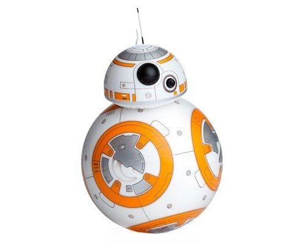
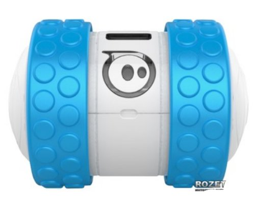
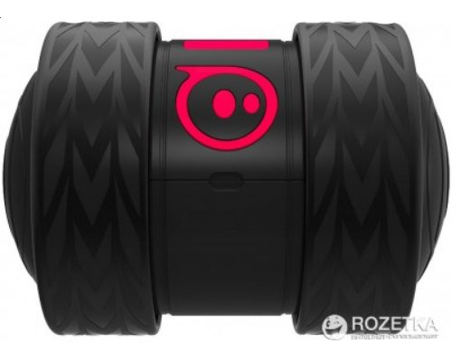
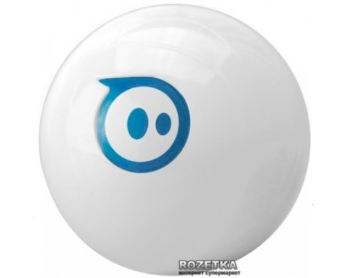
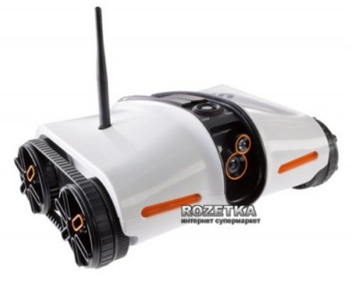
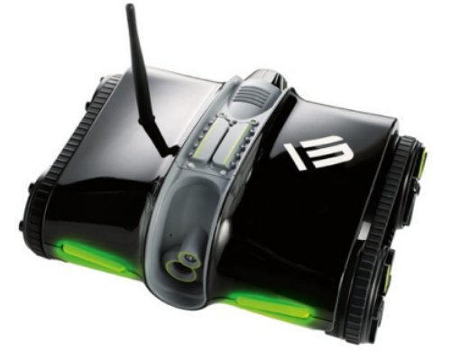
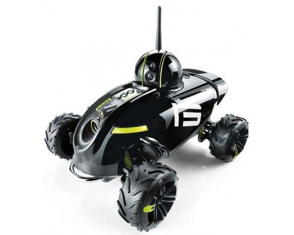
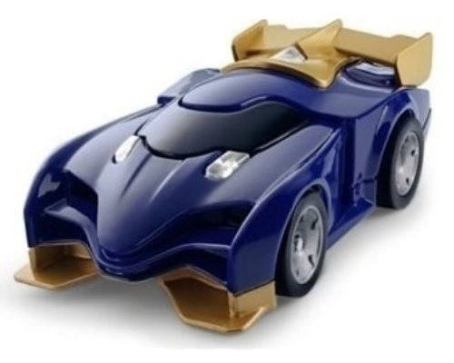
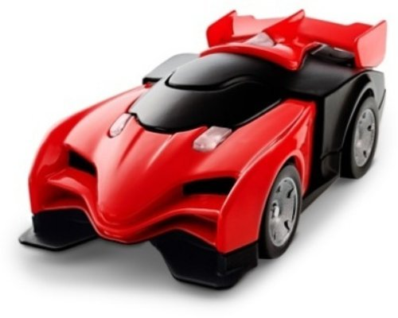

| № | Название | Картинка | Примерная стоимость грн. | Примечания | Наличие API | Ссылки для покупки |
|---|---|---|---|---|---|---|
| 1 | Sphero Orbotix BB-8 |  | 4200 | Уже проверен, есть наше API | Есть | Citrus |
| 2 | Sphero Orbotix Ollie |  | 2300 | официальное API есть на node.js | Есть | Rozetka Citrus |
| 3 | Sphero Orbotix Ollie Darkside |  | 3 100 | Скорее всего есть | Rozetka Citrus |
|
| 4 | Sphero Orbotix Sphero 2.0 |  | 3 500 | официальное API есть на node.js | Есть | Rozetka Citrus |
| 5 | Brookstone Rover App-Controlled Spy Tank with Night |  | 5 000 | В роботе есть камера, с которой можно онлайн получать видео | Есть | Rozetka |
| 6 | Brookstone Rover App-Controlled Spy Tank with Night 2.0 |  | 5 000 | Скорее всего совместим с предыдущей версией | Rozetka Brookstone |
|
| 7 | Rover Revolution App-Controlled Wireless Spy Vehicle |  | 5 000 | ? | Brookestone Citrus |
|
| 8 | Anki Katal car |  | 1 000 | Не известно, может ли машинка ездить не по специальной трассе, а просто по полу | Есть | Moyo |
| 9 | Anki RHO Red |  | 800 | Не известно, может ли машинка ездить не по специальной трассе, а просто по полу | Есть | Citrus |